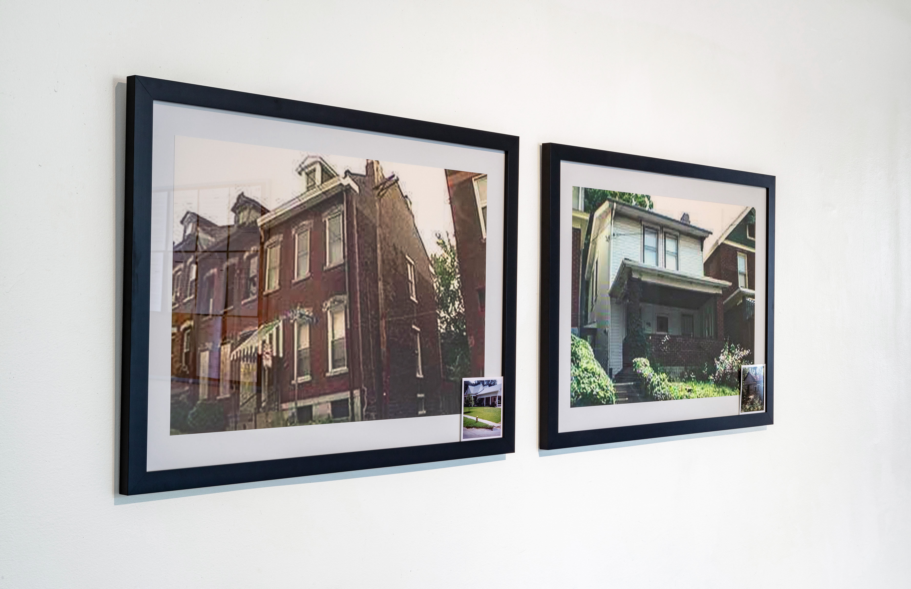
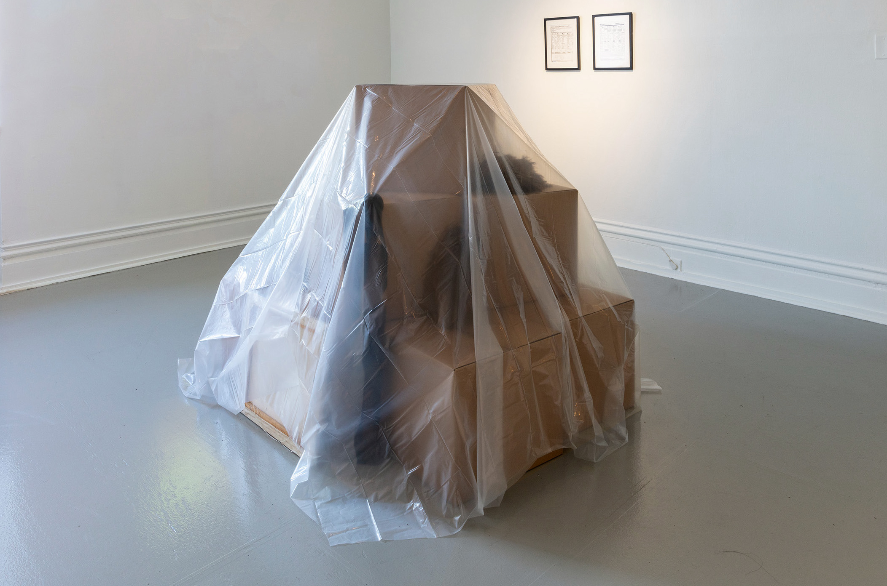

City of Pittsburgh Property Tax Regressivity and Racial Inequality: 2012-2020 (with Jordan B. Abbott)
City of Pittsburgh Property Tax Regressivity and Racial Inequality: 2012-2020 (with Jordan B. Abbott)
ATTOM and Home Mortgage Disclosure Act data, R software.
2021.
In 2020, economists at the University of California Berkeley found that, on average, non-White homeowners were charged significantly higher property taxes across the United States.
1
The following year, researchers at the University of Chicago revealed that the owners of America’s lowest-value properties tended to face tax rates two times greater than those applied to the highest-valued properties of their neighbors.
2
Most counties regularly perform reassessments, during which the market value of each property is recalculated to ensure taxes are distributed proportionally. However, in Pennsylvania, regular reassessment is not required by law. Allegheny County (home to the City of Pittsburgh) takes advantage of this loophole by relying on a base-year system in which the taxable value of property is held constant, despite dramatic local market fluctuations among neighborhoods. Allegheny’s most recent reassessment took place in 2012.
Since then, no study of home-value or racial disparity within Pittsburgh’s property tax system has been published.
3
To investigate tax differences between races and provide an updated analysis of Pittsburgh’s home-value tax disparities, we reviewed 2012-2020 real estate sale records from ATTOM Data Solutions and the federal Home Mortgage Disclosure Act database. Our analysis shows that during these years, Pittsburgh’s Black homebuyers faced tax values 7.5% higher, on average, than Whites. Furthermore, the most expensive homes appear to be taxed at values just over half of their sale price (65%), while the least expensive homes were taxed at approximately twice their sale value (193%). Our findings suggest that Pittsburgh’s tax system is regressive (lower-value property owners pay the highest taxes) and systematically generates racial disparity.

Tax Comp. (after Loewen)
Ink-jet prints.
2021.
This diptych shows Allegheny County Real Estate Portal images of Pittsburgh properties sold to White and Black homeowners in 2017. The White-owned property (left) had a sale value over $200,000 higher than that of the Black-owned home (right). However, when Allegheny County and the City of Pittsburgh assessed the properties for taxation purposes, they valued the White-owned home $1,300 less than its Black-owned counterpart.
Tucked into the bottom corner of each frame are reproductions of photographs used as evidence in the 1967 federal class-action lawsuit
Bland v. McHann. In 1966, Black residents of Edwards, Mississippi led an economic boycott of White businesses after years of discrimination by the town’s local government and private institutions. The following year, each Black homeowner who participated in the boycott saw their property tax assessment raised dramatically. In
Bland v. McHann, plaintiffs argued that town officials had intentionally discriminated in calculating property reassessments. To demonstrate this, sociologist James Loewen documented homes in the town with equal assessment values owned by Black and White residents. He presented these summaries to third-party appraisers who uniformly valued the White-owned homes over their Black-owned equivalents, often by significant margins — demonstrating that in a fair system, the White property owners would be paying much higher property taxes than their Black counterparts. Ultimately, however, the district court found no wrongdoing on behalf of town officials. Successive appeals to the U.S. Court of Appeals for the Fifth Circuit and to the U.S Supreme Court were unsuccessful in changing the verdict.
4
1414 Mortgage Escrow (with Hayley Haldeman and Jordan B. Abbott)
Escrow account, mortgage, municipal bonds.
2021.
Analysis of aggregated real estate data from ATTOM Data Solutions and the federal government’s Home Mortgage Disclosure Act reveals that from 2012-2020, property taxes levied on Black homeowners in the City of Pittsburgh were, on average, 7.5% higher than those levied on White homeowners. Even for Black owners of low value homes, this difference can amount to hundreds of dollars in excess taxes each year.
Using these data, we identified a Black homeowner living near the Mattress Factory in Pittsburgh’s Northside whose rate of overtaxation reflected the city-wide average. In collaboration with this homeowner, the Mattress Factory Museum established an escrow account — traditionally used in mortgage agreements to temporarily hold property tax payments — that will reimburse the homeowner for all excessive property taxes he will pay over the next 15 years (estimated at $7,153.56). To cover this expense, the Mattress Factory obtained a $10,000 loan from First National Bank using a blanket mortgage on the Museum’s annex gallery at 1414 Monterey Street as collateral. Excess funds were invested by the Museum in Allegheny County municipal bonds secured by the county’s property tax revenue. Upon completion of the 15-year escrow agreement, the Mattress Factory will disburse remaining funds to Grounded Strategies and Neighborhood Allies, local nonprofits working to expand housing access and equitable land use in Pittsburgh.
.jpg) Homeowner Appraisal (Value Comparison Approach)
Homeowner Appraisal (Value Comparison Approach)
Appraisals, graphite on ink-jet prints.
2021.
In the home appraisal process, trained appraisers survey and research a real property to estimate its fair market value. The estimate yielded by an appraisal can have a significant impact on the ultimate sale value of a home, as well as on the terms and rates of a mortgage or line of credit secured by home equity. The most common appraisal strategy is the Sales Comparison Approach, in which the adjusted values of 2-5 recently sold, comparable homes (“comps”) are averaged to generate an appraisal estimate.
Recent research demonstrated that in commercial appraisals around the country, Black homes are valued to be worth less than those of Whites, even when neighborhood profile, home quality, and local market trends are held constant.
5 In 2018, property values in Pittsburgh’s predominantly Black neighborhoods were 11.6% lower than those in the city’s predominantly White neighborhoods.
6
In May 2021, we arranged to have a Black-owned property located in Pittsburgh’s Highland Park neighborhood appraised twice: once with the Black homeowner present, and once with a White individual of the same gender and approximate age acting as the owner. Between appraisals, all household effects (family photos, artwork, and decorations) deemed “Black” by the true homeowner were replaced with “White” equivalents from the stand-in’s home. Different appraisers were hired to conduct each evaluation.
Street addresses of each home listed were redacted to preserve anonymity. Adjustments made to the sales comparison section of each appraisal were annotated to highlight the differences in home value judgement between the Black- and White-owner reports. These accumulated differences produced a $36,000 increase in value when the home was presented by a White owner.

Sed Valorem (Market Hedonic Pricing)
Appraisals; American, Brazilian and Senegalese masks; American and Senegalese carved wooden sculptures; djembe drum; framed paintings and photographs; plastic dust cover; Senegalese kora; sharpie and packing tape on cardboard moving boxes.
2021.
In May 2021, we arranged to have a Black-owned property located in Pittsburgh’s Highland Park neighborhood appraised twice: once with the Black homeowner present, and once with a White individual of the same gender and approximate age acting as the owner. Between appraisals, all household effects (family photos, artwork, and decorations) deemed “Black” by the true homeowner were replaced with “White” equivalents from the stand-in’s home. Different appraisers were hired to conduct each evaluation. Subjective differences between the appraisals produced a $36,000 increase in value when the home was presented by a White owner and purged of “Black” objects.
Sed Valorem (Market Hedonic Pricing) replicates the storage arrangement designed by the Black homeowner between appraisals. After collecting items from around the house, the homeowner sorted them according to personal value: those she deemed least significant were packed into 18” x 18” x 16” corrugated cardboard moving boxes, upon which the remaining high-valued objects were placed. All boxes were sealed with packing tape and labeled in sharpie according to their contents. Over the assemblage, the homeowner draped a 25.4 μm thick plastic dust covering.
Ad valorem is a Latin term meaning “according to value” and is used in tax legislation to denote the total market value of an asset from which a percentage in tax can be charged. Sed Valorem appropriates the prefix
se- or
sed- meaning “without” or “apart” (as in
segregation and
sedition) to suggest objects whose value is degraded or inverted.
Sed Valorem may thus connote “devaluation,” a concept championed by the Brooking Institute’s Andre Perry to describe the chronic depreciation of Black property, and “anti-value,” coined by geographer David Harvey to describe objects of value removed from capitalist systems of production, exchange or debt. The term “market hedonic pricing” describes the practice of evaluating assets based on a combination of their inherent use-value and their value as perceived by the external market.
 50 Cent Cribs Appraisal
50 Cent Cribs Appraisal
Single channel audiovisual projection (10 minutes).
2021.
In each episode of the documentary television program MTV’s Cribs, a celebrity showcases their lifestyle and wealth with a tour of their home. The show became a pop culture staple in the early 2000’s, and boasted guest appearances from notable Black musicians including Snoop Dogg, Missy Elliott, Usher, and Mariah Carey.
Among the most viewed Cribs episodes is rapper Curtis Jackson’s (a.k.a. 50 Cent) double-long feature which aired in July of 2007, as the U.S. housing crisis was just beginning. The 50,000-square foot Connecticut property Jackson presents was originally built in 1985 by . Benjamin J. Sisti, co-founder of the real estate investment company Colonial Realty. Following his company’s highly publicized collapse in 1993, Sisti pled guilty to fraud and was sentenced to nine years in prison. Ten years later, Jackson purchased the property for $4.1 million, only to sell it in 2019 at a $1.2 million loss. After airing, the 50 Cent Cribs episode became the subject of great controversy when it was revealed that the extensive car collection Jackson presented as his own was rented from a collector for the shoot.
In
50 Cent Cribs Appraisal, all instances of Blackness in the 50 Cent Cribs episode — including Jackson himself — have been digitally removed. The episode’s original audio is replaced with an edited version of “Poor Lil Rich” from 50 Cent’s breakout album
Get Rich or Die Tryin’, in which the hook “I was a poor nigga, now I'm a rich nigga” is reversed to “I was rich a nigga, now I'm a poor nigga.”
Notes
Exhibition documentation credit: Tom Little for the Mattress Factory
1 Avenancio-Leon, Carlos and Troup Howard. “The Assessment Gap: Racial Inequalities in Property Taxation” (Working Paper) Washington Center for Equitable Growth. October 5, 2020. ↑
2 Berry, Christopher, “Reassessing the Property Tax” University of Chicago. March 9, 2021. ↑
3 No analysis of racial disparity in property taxes has been conducted for the City of Pittsburgh in recent years. In 2021, the University of Chicago’s Center for Municipal Finance published analyses of property assessment disparities along the axes of home value and homeowner income for a number of municipalities, including Pittsburgh. Their data, however, spanned 2008-2017, straddling Allegheny County’s 2021 reassessment and therefore providing limited insight into the recent impact of the county’s value freeze. See University of Chicago Center for Municipal Finance, “Property Tax Fairness” March 9, 2021. ↑
4 Kahrl, Andrew W. "The Power to Destroy: Discriminatory Property Assessments and the Struggle for Tax Justice in Mississippi." Journal of Southern History. 2016;(82)3:579-616. doi:10.1353/soh.2016.0165. ↑
5 Howell, Junia and Elizabeth Korver-Glenn. “Neighborhoods, Race, and the Twenty-first-century Housing Appraisal Industry.” Sociology of Race and Ethnicity. 2018;4(4): 473-490. ↑
6 Perry, Andre, et al. “The Devaluation of Assets in Black Neighborhoods.” The Brookings Institute. 2018. ↑